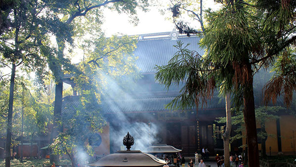

morly旅游圈
杭州，简称“杭”，浙江省省会、副省级市、长江三角洲城市群中心城市、环杭州湾大湾区核心城市、杭州都市圈核心城市、沪嘉杭G60科创走廊中心城市、国际重要的电子商务中心，位于中国东南沿海、浙江省北部、钱塘江下游、京杭大运河南端，是浙江省的政治、经济、文化、教育、交通和金融中心。杭州人文古迹众多，西湖及其周边有大量的自然及人文景观遗迹，具代表性的有西湖文化、良渚文化、丝绸文化、茶文化，以及流传下来的许多故事传说成为杭州文化代表。
杭州，这个美丽的城市，有着许多的美丽景色、美味的美食和传奇的故事。大家应该都看过《新白娘子传奇》，了解白素贞和许仙的爱情故事，看了这个传说，大家不想去杭州看看，他们相遇的地点，那宛如静卧的少女，青涩朦胧，曼妙多姿的西湖吗？不想去看看那囚禁了白娘子多年，曾讨厌的雷峰塔吗？虽然雷峰塔在传说中是不太讨喜的，但是在雷峰塔上登高俯瞰西湖的美景还是不错的，并且雷峰夕照为西湖十景之一哦。杭州的美景可不只有西湖哦，杭州还有著名的“两江两湖”（富春江——新安江——千岛湖——湘湖），去了杭州不去感受一下这两江两湖的美丽，岂不是人生一件憾事。杭州的钱塘江也是十分出名的，去钱塘江一定要在农历八月十八日时去参加观潮节，历史上俗称这天是“潮神生日”，因为一年中就这天的潮势最为壮观。
去杭州旅游，当然也少不了当地特产了，杭州特产繁多，有杭州丝绸、西湖龙井、西湖藕粉、径山茶、西湖绸伞、雪水云绿茶、萧山萝卜干、临安山核桃等，其中最为著名的有西湖龙井和杭州丝绸，去了杭州可一定不能不去品尝下西湖龙井茶的滋味甘甜。杭州丝绸的历史悠久，制作水平高，在唐代时，大诗人白居易“丝袖织绫夸柿蒂，青旗沽酒趁梨花”的诗句就道出了当时杭州丝绸的水准之高，现在的水准肯定是更上一层楼了，所以大家去杭州旅游时可以去买一些当做纪念。
杭州4天旅游攻略：
第一天：杭州站->南宋御街->河坊街；
第二天：飞来峰灵隐寺->西湖风景区
第三天：六和塔->浙大之江校区->九溪烟树->龙井村
第四天：河坊街->杭州站返程
内容整理至网络，如有侵权，请联系我们！1255394075@qq.com
